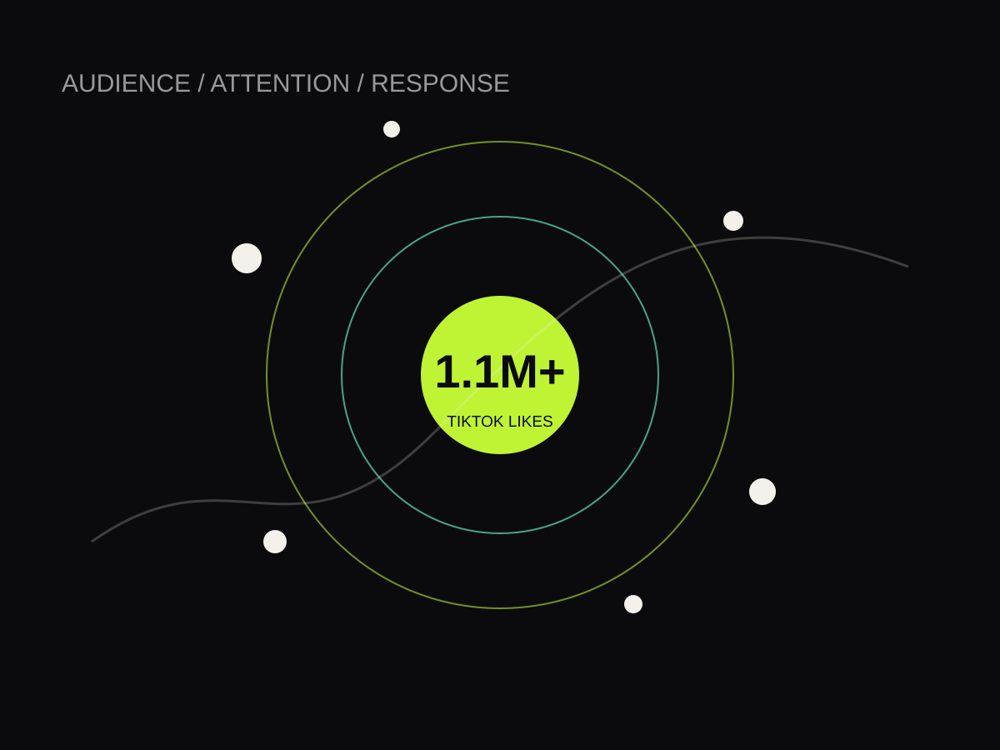

I study why people respond.
Then I use what I learn.
I’m Darius Kaiser. Psychology taught me how to study behavior. Research taught me how to separate a hunch from a pattern. Marketing and advertising taught me how those patterns show up in messaging. Social media gave me somewhere to test all of it in public.

01 / MY LENS
People first.
Evidence right after.
I like numbers, but I’m usually interested in the human reason underneath them. If a post jumps, I want to know what changed. If engagement drops, I want to know whether it was the hook, timing, audience, format, or something outside the content entirely.
That is where my psychology background matters. I’m used to working with qualitative and quantitative information together instead of pretending one tells the whole story.

That question follows me from research labs to campaign reports to social analytics.

“A number can tell me that something moved. Context helps me understand what actually moved it.”
02 / DIGITAL IN PRACTICE
I’ve learned the feed
by living in it.
Read the audience
I watch formats, hooks, pacing, comments, repost behavior, visual language and the point where a trend stops feeling current and starts feeling copied.
Put the idea out
Publishing gives me a live feedback loop. I can see what gets ignored, what holds attention, and what small changes alter the response.
Look past the vanity metric
Reach and likes matter, but only in context. I care about who responded, what the content asked them to do, and whether the result actually matches the objective.
Make the next one better
I’m comfortable changing the hook, simplifying the idea, shifting the visual, or leaving a trend alone when it does not belong.
03 / WHAT I BRING
Analytical enough to question it.
Creative enough to present it.
Read performance
Campaign reporting · engagement metrics · conversion rates · audience demographics · growth analytics · trend identification · data interpretation
Understand the why
Qualitative analysis · quantitative analysis · consumer behavior · research design · data collection · evidence-based evaluation
Make it land
Audience-aware writing · visual communication · content strategy · presentation design · Canva · Photoshop · social-first thinking
Explain the work
Client meetings · presentations · performance reviews · technical communication · cross-functional collaboration · clear writing
04 / CONTACT
Numbers tell a story.
I help make it useful.
I bring behavioral research, campaign analysis, social instinct and presentation skills into the same room.